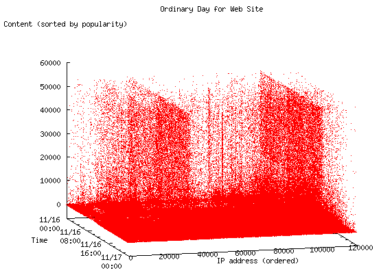
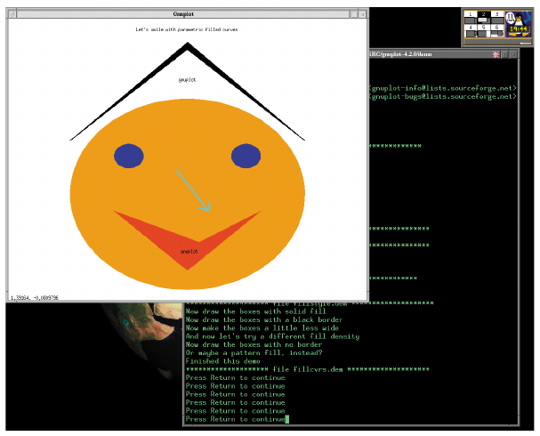
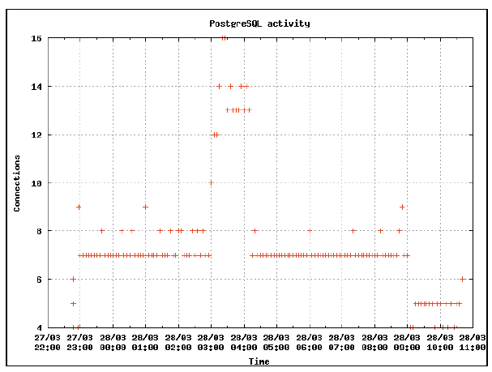
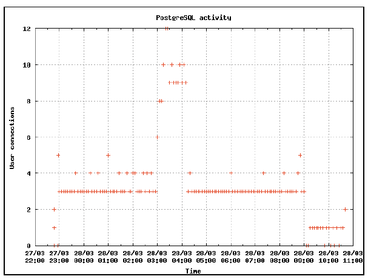
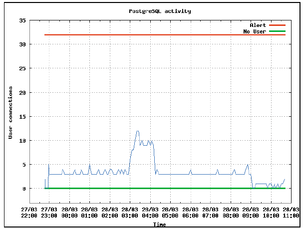
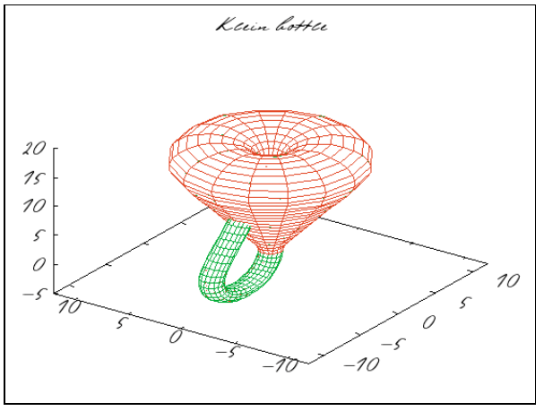
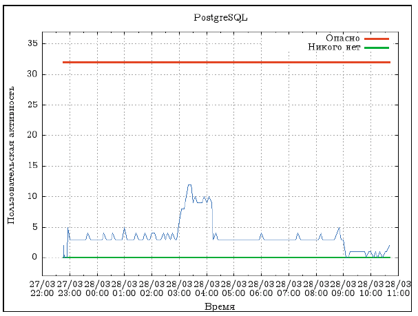

Gnuplot. Графики заказывали?
Всё это меня очень заинтересовало, потому что Седловой, увлёкшись, говорил живо и образно.
Но потому он спохватился, что получается как-то ненаучно, понавешал на сцене схемы и графики…
Понедельник начинается в субботу.
Аркадий и Борис Стругацкие
Уже более двадцати лет gnuplot используется для визуализации данных. Это профессиональный инструмент, так как создавался под нужды учёных, и ровно по той же причине gnuplot поразительно эффективен. Трансформация данных в графики – то, что у gnuplot получается лучше всех.
3 марта 2007 года, через три года после предыдущего релиза вышла новая версия популярной программы для создания графиков gnuplot. Gnuplot известен прежде всего умением легко производить обычные двухмерные графики, хотя он может строить и трёхмерные поверхности и даже подгонять их. При работе с программой возникает ощущение абсолютной надёжности, естественно, если не просить чего-то нереального. Родная страничка проекта находится по адресу http://www.gnuplot.info.
Формально gnuplot создавался для визуализации научных данных. Есть много указаний на то, что учёные используют gnuplot, в том числе и для предоставления полученных данных. Например, климатические карты, предоставляемые NASA (http://www.ghcc.msfc.nasa.gov/charm/charmanalysis), создаются с помощью этой программы.
Хороший системный администратор журналирует множество параметров обслуживаемой им системы. Так – на всякий случай. Это для того, чтобы, когда «всякий случай» всё-таки придёт, можно было выявить его причины и не допустить подобного в будущем. Помочь в этом может только анализ имеющихся записей. Представление информации в виде графиков – один из самых эффективных инструментов анализа.
Gnuplot ориентирован на анализ данных. Для того чтобы начать анализировать gnuplot, необходимо «объяснить» структуру исследуемых данных, что требует некоторых усилий. Зато в дальнейшем ориентация на анализ позволяет легко экспериментировать с графическими представлениями данных.
Примером подобных экспериментов является предложение от Raju Varghese представлять логи Apache в виде трёхмерного графика (см. рис. 1). Это ещё один способ локализации неочевидных проблем. Статья «A New Visualization for Web Server Logs» с описанием предложения опубликована на O'Reilly Network по адресу http://www.oreillynet.com/pub/a/sysadmin/2007/02/02/3d-logfile-visualization.html.

Рисунок 1. Отображение выбранных веб-страниц в зависимости от IP-адреса запроса и от времени
Для примера я взял логи с относительно небольшого локального веб-сайта и проделал описанную в статье Raju Varghese-процедуру. По вертикали отложен порядковый номер веб-страниц, отсортированных по популярности. По горизонтали отложено время запроса и порядковый номер отсортированных IP-адресов, с которых происходил запрос.
На рис. 1 видно, чем веб-сайт живёт (особенно впечатляющим получается снятое таким образом кино). Видно, что есть IP-адреса (скорее всего, целые группы, так как IP рядом), с которых регулярно приходят роботы и опрашивают все доступные страницы. Также имеется набор адресов, с которых запрашиваются только определённые страницы, но делается это аномально часто. С помощью подобных представлений вряд ли получится определить проблему, но локализовать вполне вероятно.
Чем уж заведомо не является gnuplot, так это «интуитивно понятной» (произносится как ругательство) программой. Это профессиональный инструмент. Любая полезная система требует времени на обучение. В случае с gnuplot потребуется, как минимум, полдня, чтобы освоить его концепцию и начать продуктивно работать.
К вопросу о лицензии
Gnuplot можно распространять и использовать бесплатно. Исходный код доступен, но модифицированные исходники запрещено выкладывать в публичный доступ. Дополнения можно распространять только в виде патчей к исходному коду. Следует понимать, что «gnu» в названии программы пишется маленькими буквами и не имеет никакого отношения ни к GNU (GNU's Not UNIX), ни к FSF (Free Software Foundation). Подробности лицензии изложены в файле дистрибутива Copyrights.
Установка
Если установка производится на какой-либо дистрибутив GNU/Linux, то gnuplot наверняка уже есть в стандартном репозитарии.
Например, в случае Debian установка выглядит следующим образом:
> sudo apt-get install gnuplot
Исходники или бинарники для других операционных систем можно получить, например, здесь: ftp://ftp.dante.de/pub/tex/graphics/gnuplot. Исходники последней версии лучше скачать с официального сайта на SourceForge: http://downloads.sourceforge.net/gnuplot/gnuplot-4.2.0.tar.gz. Сборка из исходников выглядит примерно так:
> tar xvfj gnuplot-4.2.0.tar.gz
> cd gnuplot-4.2.0/
> ./configure --prefix=/usr/local --with-kpsexpand
> make
> make install
Ключ --prefix указывает, в какую директорию установить программу, а --with-kpsexpand добавляет к директориям для поиска шрифтов ресурсы LaTeX, если он установлен.
Полезно просмотреть вывод скрипта configure. Часть форматов вывода требуют установки соответствующих программных компонент. Например, для вывода графиков в форматах PNG или JPEG необходима библиотека libgd. Всё дальнейшее повествование будет касаться gnuplot версии 4.2.0, собранного из исходников, и дистрибутива Debian GNU/Linux. В силу высокой портабельности gnuplot никаких особых проблем в случае выбора другого дистрибутива или операционной системы быть не должно.
Теперь можно запустить программу:
> sudo apt-get install gnuplot
G N U P L O T
Version 4.2 patchlevel 0
last modified March 2007
System: Linux 2.6.8-2-k7
Copyright (C) 1986 - 1993, 1998, 2004, 2007
Thomas Williams, Colin Kelley and many others
Type `help` to access the on-line reference manual.
The gnuplot FAQ is available from
http://www.gnuplot.info/faq/
Terminal type set to 'x11'
Первое, что следует изучить для интерактивной работы с gnuplot, – это команду выхода exit. Прежде чем выйти можно посмотреть демонстрацию возможностей примерно следующим способом:
gnuplot> cd "demo/"
gnuplot> load "all.dem"
Все команды и подсказки выводятся в терминале, в котором запускается gnuplot, а отрисовка графиков при интерактивном режиме в случае GNU/Linux производится по умолчанию в X-овом окне (см. рис. 2).

Рисунок 2. Gnuplot демонстрирует свои возможности: хterm и X-окно
Использование
Сила gnuplot в том, что все его команды скриптуются, что позволяет легко автоматизировать создание графиков. Но прежде чем что-то оптимизировать – это что-то следует для начала создать или по крайней мере знать, как это что-то сделать.
Интерактивная работа
Второй команде, которой следует обучиться, это команде help или её более короткой версии – ?.
gnuplot> help help
The `help` command displays on-line help. To specify
information on a particular topic use the syntax:
help {<topic>}
В gnuplot есть подробная текстовая иерархическая справка, в которой есть ответы на все вопросы, – надо только уметь читать. С помощью префикса «!» можно выполнять команды внешней оболочки:
gnuplot> ! ls *.tex
-rw-r--r-- 1 baldin 29297 2007-03-17 16:14 gnuplot.tex
Для того чтобы временно выйти из gnuplot и запустить командный интерпретатор, достаточно набрать команду shell.
Первое, что необходимо сделать при построении графика, это выбрать, в каком виде следует вывести результаты и куда. За формат отвечает команда set terminal, а за вывод – set output:
gnuplot> set terminal png
gnuplot> set output "myexample.png"
Если после команды set output не будет указано имя файла, то вывод перенаправляется в STDOUT. Это не касается случаев, когда с помощью set terminal устанавливаются «настоящие» терминалы, например, x11. В зависимости от выбора терминала график выводится либо в специально открытое окно, либо в файл. При выборе терминала можно конкретизировать его настройки. Для каждого из них они свои, например, терминал png можно настраивать следующим образом:
gnuplot> help set terminal png
Syntax:
set terminal png
{{no}transparent} {{no}interlace}
{{no}truecolor} {rounded|butt}
{tiny | small | medium | large | giant}
{font <face> {<pointsize>}}
{size <x>,<y>} {{no}crop}
{{no}enhanced}
{<color0> <color1> <color2> ...}
Gnuplot выводит графики в десятки различных форматов. В число известных форматов попадают растровые (png, jpeg, gif и другие менее известные), векторные (corel, dxf, fig, mp, svg, epslatex, latex, eepic, postscript, pdf, tgif и много чего ещё), принтеры (epson-180dpi, hpgl, okidata, разные hp, pcl и прочее) и «настоящие» терминалы (x11, aqua, ggi, VMS, Windows и прочее). Если связь настолько плохая, что, кроме верного ssh, ничего нет, то можно обойтись и этим:
gnuplot> set terminal dumb 50 20
Terminal type set to 'dumb'
Options are 'feed 50 20'
gnuplot> set encoding koi8r
gnuplot> plot [-3:3][-1:1.2] sin(x) t 'синус'
+------+------+-----+------+------+------+
1 ++ + + + +синус ******++
| *** **** |
| ** ** |
| ** ** |
0.5 ++ * **++
| ** **|
| * **
| ** *
0 ++ ** ++
* * |
|** ** |
-0.5 ++* ** ++
| ** ** |
| ** ** |
+ *** *** + + + +
-1 ++-----******-+-----+------+------+-----++
-3 -2 -1 0 1 2 3
Для того чтобы нарисовать график по реальным данным, эти данные необходимо подготовить. Пусть требуется изучить активность пользователей базы данных PostgreSQL. Так как в ответ на каждое соединение PostgreSQL делает fork, то проще оценить число активных соединений, просто подсчитав число процессов пользователя, под которым запущена эта база данных. По умолчанию это пользователь postgres. Для периодического сбора информации в cron следует поместить строку примерно следующего вида:
# считаем число процессов каждые 5 минут
*/5 * * * * echo `date -R` `ps aux | grep ^postgres| wc -l` >> /home/baldin/connectcount.txt
Команда date фиксирует время, а конвейер из ps, grep и wc выдаёт число соединений. В результате получается файл /home/baldin/connectcount.txt, состоящий из строк следующего вида:
...
Wed, 28 Mar 2007 02:55:01 +0700 7
Wed, 28 Mar 2007 03:00:01 +0700 10
...
Теперь необходимо описать формат этих данных. В случае числа процессов проблем нет, так как это просто столбик цифр, а вот со временем придётся разобраться. Сложность представляет то, что запись времени – сложная структура. Также необходимо задать подписи к графику, чтобы данные «обрели смысл».
# Ось X – это время
set xdata time
# Формат временных данных. Описывается только структура вида
# 28 Mar 2007 02:55:01, а день недели и зона игнорируются
set timefmt "%d %b %Y %H:%M:%S"
# Подпись для оси X
set xlabel "Time"
# Формат меток для оси Х
set format x "%d/%m\n%H:%M"
# Подпись для оси Y
set ylabel "Connections"
# Отрисовка решётки на графике
set grid
# Заголовок для графика
set title "PostgreSQL activity"
Исчерпывающую информацию о работе с временными данными можно получить, набрав help set timefmt. При определении формата распознаются следующие определения:
Теперь можно вывести данные на экран:
plot "connectcount.txt" using 2:7 title ""
Следует обратить внимание на инструкцию using. Она определяет столбцы отображаемых данных. Столбцы по умолчанию разделяются пробельными символами. В файле connectcount.txt описание времени начинается со второго (2) столбца (день месяца), а число процессов находится в седьмом (7) столбце (см. рис .3).

Рисунок 3. Оценка активности работы с PostgreSQL
Чтобы точнее оценить пользовательскую активность, следует из числа посчитанных процессов отнять системные. В моём случае таких процессов ровно 4 (изначальный postmater, writer process, stats buffer process и stats collector process):
plot "connectcount.txt" using 2:($7-4) title ""
Здесь вместо простого указания столбца в скобках указана формула. Номер столбца должен следовать за знаком $. Gnuplot поддерживает операции со столбцами данных фактически любой сложности. В данном же случае здесь достаточно простой арифметики (см. рис. 4).

Рисунок 4. Оценка пользовательской активности PostgreSQL
Вспомним, что у PostgreSQL есть ограничение на число возможных соединений, и немного украсим график:
plot [][-3:35] 32 with lines linewidth 3 title "Alert", 0 with lines linewidth 3 title "No User", "connectcount.txt" using 2:($7-4) title "" with lines
В отличие от предыдущих попыток вывести график здесь явно указывается интервал данных, которые следует вывести на график. В данном случае это сделано исключительно для красоты. Также для красоты данные выводятся в виде сплошной линии (инструкция with lines). Кроме вывода самих данных, также были выведены две прямые ограничительные линии – для полного отсутствия пользовательской активности и для условно опасного предела, который число соединений не должно превышать. Описание функций/данных в команде plot следует через запятую. Инструкция linewidth позволяет указать толщину соединяющей линии, а title указывает подпись для легенды. Gnuplot также поддерживает сокращённые ключевые фразы, например, w l эквивалентно with line. Подробности смотрите в справке в разделе «plot > style».
Теперь на график можно и посмотреть (см. рис. 5). С 3 до 4 ночи был странный всплеск активности – не фатально, но в чём дело, выяснить придётся. А казалось бы, что всё уже давным давно исследовано – пользователи явно не спят, точнее, не спят их программы.

Рисунок 5. Оценка пользовательской активности PostgreSQL с визуальными ограничениями
Команда plot является центральной. Вокруг неё всё и вертится. По значимости её можно сравнить разве что с SELECT для SQL. Фактически основное время на изучение gnuplot уходит именно на разборки с этой командой:
gnuplot> help plot
plot {<ranges>}
{<function> | {"<datafile>" {datafile-modifiers}}}
{axes <axes>} {<title-spec>} {with <style>}
{, {definitions,} <function> ...}
После команды plot обычно идёт имя функции или имя файла с данными. Список поддерживаемых функций можно посмотреть с помощью команды help в разделе «expression > functions». Файл с данными по умолчанию должен представлять из себя столбцы цифр, иначе, как это обязательно происходит со временем, формат данных необходимо описать.
Кроме команды plot, которая отвечает за двухмерные графики, существует splot, отвечающая за представление трёхмерных графиков с достаточно похожим синтаксисом (см. рис. 6). Третья команда создания графиков, replot, исполняет предыдущую plot/splot-инструкцию, добавляя свою командную строку в конце.

Рисунок 6. Бутылка Клейна (демонстрация возможностей gnuplot). Результат исполнения команды splot

Рисунок 7. Оценка пользовательской активности PostgreSQL с визуальными ограничениями и кириллицей в подписях
Русский вопрос
С кириллицей, как обычно, не всё так просто. Можно указать 8-битную кодовую страницу, например koi8-r:
set encoding koi8r
Сам gnuplot использует внешние шрифты. То есть достаточно, чтобы шрифты по умолчанию также имели эту же кодировку, или, если графики gnuplot используются в связке с LaTeX, использовать терминал epslatex (help set terminal epslatex).
Проблема возникает, если хочется выбрать что-то другое вместо koi8r или koi8u. Все остальные 8-битные кодовые страницы придётся добавлять самостоятельно, благо исходники доступны. С другой стороны, в двадцать первом веке пора задуматься о переходе на Unicode. К счастью, последняя версия gnuplot умеет с ним работать. Для этого достаточно найти шрифт в кодировке unicode. Например, шрифты Computer Modern http://sourceforge.net/projects/cm-unicode, подправленные Андреем Пановым:
# Указываем Unicode-шрифт для png-терминала.
# Для работы со шрифтом используется библиотека libgd
set terminal png font "/home/baldin/text/gnuplot/cmunorm.pfb" 12
set output "pgconn-cyr.png"
# теперь выводим кириллические надписи
set title "PostgreSQL"
set xlabel "Время"
set ylabel "Пользовательская активность"
plot [][-3:37] 32 with lines linewidth 3 title "Опасно", 0 with lines linewidth 3 title "Никого нет", "connectcount.txt" using 2:($7-4) title "" with lines
Естественно, это работает только в случае, если надписи будут в формате Unicode.
Неинтерактивная, или «настоящая» работа
До сих пор все примеры касались интерактивной работы с gnuplot. Очевидно, что набирать серию команд руками каждый раз, когда требуется график, не самый оптимальный способ работы.
Проще необходимые команды записать в текстовый файл, который можно загрузить с помощью инструкции load:
gnuplot> load "myexample.gnuplot"
Если в файле есть несколько команд вывода графиков и каждый из них надо рассмотреть, то в нужных местах следует добавить паузу:
pause -1 "Для продолжения нажмите Enter"
Файл с инструкциями можно указать gnuplot прямо в командной строке:
> gnuplot myexample.gnuplot
Если в начале файла с командами для gnuplot добавить строчку:
#!/usr/local/bin/gnuplot -persist
то сам файл можно сделать исполняемым, как и любой shell-сценарий. Опция -persist необходима, чтобы терминал, который открывается при исполнении скрипта, не закрылся по окончании работы gnuplot.
В силу вышеизложенного цикл работы с gnuplot состоит примерно из следующих фаз:
Так как командный файл – обычный текстовый файл, то легко написать сценарий, который генерирует решения для целого класса графиков в зависимости от ситуации. То есть возможен естественный переход на более высокий уровень абстракции. Например, популярно использование gnuplot для создания «кино»: «скрипт в цикле -> картинки -> mencoder ‑> фильма».
Заключение
Столь краткий обзор не может осветить всех аспектов работы с этим замечательным инструментом. Из статьи почти полностью выпали трёхмерные построения, гистограммы, контурные карты, векторные поля, различные системы координат, операции над данными, работа в реальном времени и циклы, ограничения на шкалу, печать нескольких графиков в разных масштабах, подгонка данных функциями с помощью метода наименьшего квадрата и многое другое. Подготовка данных для визуализации – это отдельная и очень богатая тема, но она, скорее всего, имеет больше отношение к умению писать скрипты, например на perl, благо gnuplot легко скриптуется.
Документация, идущая с пакетом, представляет из себя справочник, который ориентирован прежде всего на профессионалов. Это немного затрудняет вхождение в технологию новичкам. Но трудности не должны пугать истинных энтузиастов. Изучающим gnuplot, помимо всего прочего, имеет смысл обратить внимание на ресурс, созданный Toshihiko Kawano – http://t16web.lanl.gov/Kawano/gnuplot/index-e.html.
Приложение
Возможные альтернативы gnuplot
Gnuplot близок к идеалу, но всё-таки не идеален. Есть много программ, которые могут заменить его для выполнения схожих задач.
Когда возникает желание рассмотреть аналоги gnuplot с точки зрения системного администратора, то приходится выбирать между программами, специализирующимися исключительно на анализе логов, и системами, специализирующимися на анализе данных.
К продуктам, специализирующимся на анализе логов, относится, например, LogReport (http://www.logreport.org). Представляет также интерес система хранения и анализа данных общего применения RRDtool (Round Robin Database, http://oss.oetiker.ch/rrdtool). Автор Tobias Oetiker заявляет о своей программе как об индустриальном стандарте для анализа логов и представлении их в графическом виде. Возможно, для стандартных ситуаций подобных программ более чем достаточно.
Для систем, специализирующихся на анализе данных, как и в случае gnuplot, эти самые данные необходимо соответствующим образом подготовить, и это часто бывает не так просто. Зато эти программы позволяют проанализировать нестандартные ситуации и свести неочевидные проблемы к очевидным.
Прежде всего следует отметить полноценные платформы для анализа, к которым можно отнести ROOT (http://root.cern.ch) и R (http://www.r-project.org). В некотором смысле эти две системы являются прямыми конкурентами друг для друга. ROOT пришла на смену легендарной системе анализа PAW (краткий обзор PAW/ROOT есть по адресу http://www.inp.nsk.su/~baldin/DataAnalysis) для анализа данных в физике высоких энергий. R – это среда и язык для статистического анализа, обработки и визуализации данных, возникшие как открытая (GNU) реализация созданного в недрах Bell Labs языка S. Архив подключаемых модулей имеет знакомую по CPAN (Comprehensive Perl Archive Network) структуру и доступен по адресу http://cran.r-project.org.
Из систем создания графиков, ориентированных на графический пользовательский интерфейс, следует отметить LabPlot (http://labplot.sourceforge.net) и Grace (http://plasma-gate.weizmann.ac.il/Grace).
В качестве легковесного компонента для встраивания в графическую библиотеку Qt (http://www.trolltech.com) можно использовать Qwt (http://qwt.sourceforge.net). Язык Python (http://www.python.ru) также имеет свои компоненты, которые можно использовать для построения графиков, в том числе и интерактивно, например matplotlib (http://matplotlib.sourceforge.net) или PyXPlot (http://www.pyxplot.org.uk).